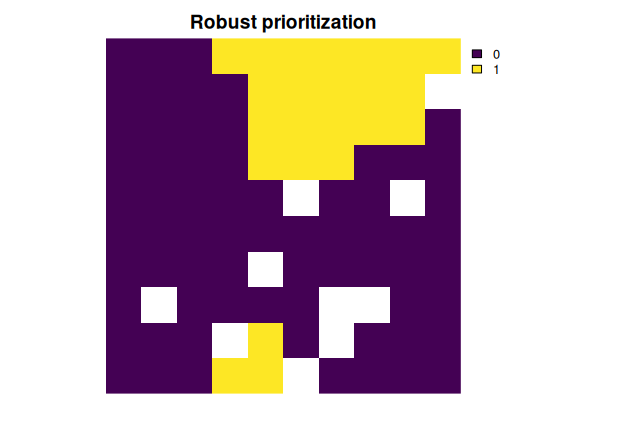

Robust Systematic Conservation Prioritization in R
The robust.prioritizr R package provides robust optimization techniques for systematic conservation prioritization. This is important because conservation prioritizations typically only consider the most likely outcome associated with a conservation action (e.g., establishing a protected area will safeguard a threatened species population) and fail to consider other outcomes and their consequences for meeting conservation objectives. By extending the prioritizr R package, this package can be used to generate conservation prioritizations that account of uncertainty in the climate change scenario projections, species distribution models, ecosystem service models, and measurement errors. In particular, prioritizations can be generated to be fully robust to uncertainty by minimizing (or maximizing) objectives under the worst possible outcome. Since reducing the associated with achieving conservation objectives may sacrifice other objectives (e.g., minimizing protected area implementation costs), prioritizations can also be generated to be partially robust based on a specified confidence level parameter. Partially robust prioritizations can be generated based on the chance constrained programming problem (Charnes & Cooper 1959, doi:10.1287/mnsc.6.1.73) and the conditional value-at-risk problem (Rockafellar & Uryasev 2000, doi:10.21314/JOR.2000.038). For more information, please see the video below.
Installation
You can install the official version of the package from CRAN with the following R code.
install.packages("robust.prioritizr")Alternatively, you can install the development version from the online code repository with the following R code.
if (!require(remotes)) install.packages("remotes")
remotes::install_github("frankiecho/robust.prioritizr")Example usage
Here is a short example showing to how to build a robust conservation prioritization with the robust.prioritizr package. A conservation prioritization involves a set of candidate places for management (termed planning units) and a set of biodiversity elements (termed features), such as species, ecosystems, or ecosystem services. To guide priority setting, conservation prioritizations typically consider the most likely outcome associated with implementing conservation management in a given planning unit. For example, when considering protected area establishment as a management option, conservation prioritizations typically assume that establishing a protected area in a planning unit will have a 100% chance of successfully protecting all the features that are thought to inhabit the planning unit. However, this assumption may lead to misplaced priorities if there is uncertainty in whether or not features inhabit different planning units.
The package uses multiple alternative outcomes to explicitly account for uncertainty. To achieve this, users should (i) input alternative outcomes for each feature as separate feature into the prioritization process, and (ii) specify which input features represent alternative outcomes by grouping them together. For example, if there are 5 alternative outcomes for a particular species based on different climate scenarios, then the data for these 5 scenarios should be input as separate features and they should be assigned to the same feature group. Below, we provide an example showing how to do this with some simulated data.
# Load packages
library(robust.prioritizr)
library(prioritizr)
library(terra)
# Get planning unit data
pu <- get_sim_pu_raster()
# Get feature data
features <- get_sim_features()
# Preview data
print(pu)## class : SpatRaster
## size : 10, 10, 1 (nrow, ncol, nlyr)
## resolution : 0.1, 0.1 (x, y)
## extent : 0, 1, 0, 1 (xmin, xmax, ymin, ymax)
## coord. ref. : Undefined Cartesian SRS
## source : sim_pu_raster.tif
## name : layer
## min value : 190.1328
## max value : 215.8638
print(features)## class : SpatRaster
## size : 10, 10, 5 (nrow, ncol, nlyr)
## resolution : 0.1, 0.1 (x, y)
## extent : 0, 1, 0, 1 (xmin, xmax, ymin, ymax)
## coord. ref. : Undefined Cartesian SRS
## source : sim_features.tif
## names : feature_1, feature_2, feature_3, feature_4, feature_5
## min values : 0.6782107, 0.2243090, 0.4147364, 0.2199663, 0.4343547
## max values : 0.9339561, 0.4142271, 0.8390267, 0.5976492, 0.6667633
# Define the feature groups.
# Here, we have data for 5 layers. Let's pretend that the first two layers
# correspond to different climate projections (i.e., alternative outcomes) for
# the same species (hereafter, species A) and the remaining layers correspond
# to another species (hereafter, species B). As such, we will
# assign the first two layers to the group A, and the remaining layers
# to the group B
groups <- c(rep("A", 2), rep("B", nlyr(features) - 2))
# Preview groups
print(groups)
# Build problem based on the robust minimum set objective,
# targets to secure 10% of each species, and a confidence level of
# 90% to obtain a solution that can meet the targets in a manner
# that is highly robust to uncertainty
p <-
problem(pu, features) |>
add_robust_min_set_objective() |>
add_constant_robust_constraints(groups = groups, conf_level = 0.9) |>
add_binary_decisions() |>
add_relative_targets(0.1) |>
add_default_solver(verbose = FALSE)
# Solve the problem
soln <- solve(p)
# Preview solution
print(soln)## class : SpatRaster
## size : 10, 10, 1 (nrow, ncol, nlyr)
## resolution : 0.1, 0.1 (x, y)
## extent : 0, 1, 0, 1 (xmin, xmax, ymin, ymax)
## coord. ref. : Undefined Cartesian SRS
## source(s) : memory
## varname : sim_pu_raster
## name : layer
## min value : 0
## max value : 1
# Plot the solution
plot(soln, main = "Robust prioritization", axes = FALSE)
Getting help
If you have any questions about the robust.prioritizr R package or suggestions for improving it, please post an issue on the code repository.